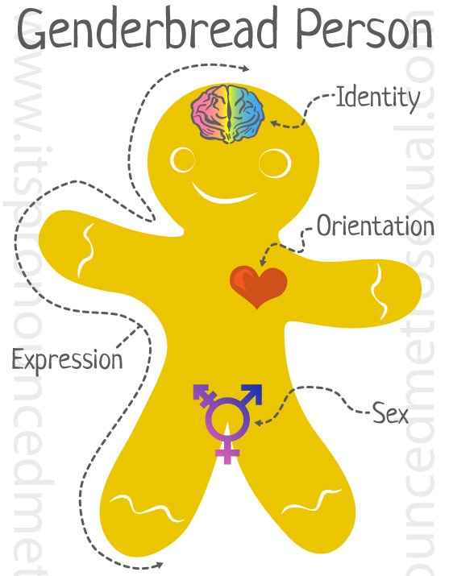

<div class="row">
  <div class="col-lg-1">
    <!-- Margin -->
  </div>
  <div class="col-lg-6">
    <!-- Static Image -->

    
  </div>
  <div class="col-lg-4">
    <!-- Rating & Buttons Components of ui.bootstrap-->
    Rating para los campos
      gerderbread_identity
      gerderbread_experssion
      gerderbread_asex
      gerderbread_attracted  
    Buttons
      gerderbread_identity_visibility
      gerderbread_experssion_visibility
      gerderbread_asex_visibility
      gerderbread_attracted_visibility
  </div>
  <div class="col-md-1">
    <!-- Margin-->
  </div>
</div>